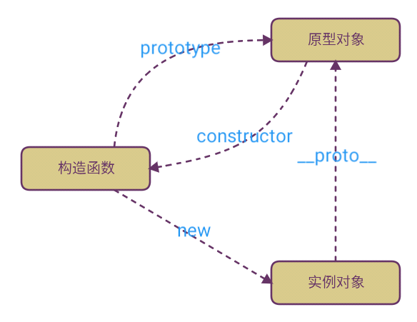

原型、原型链、对象、构造函数

- 对象：无序的属性集合
- 构造函数：创建特定类型的对象
- 原型：只有函数有且每个函数都有prototype（原型）属性，指向函数的原型对象，原型对象包含函数实例共享的方法和属性
- 原型链：除了
undefined和null外，JavaScript其他值都有__proto__隐式原型
箭头函数与普通函数
- 箭头函数的
this永远指向其上下文的this，任何方法都改变不了其指向，如call()、apply()、bind()- 箭头函数是匿名函数，不能作为构造函数，不能使用new
- 不能绑定
arugments - 不能绑定
this，this为所在上下文的this，即使使用apply或call也不能改变 - 没有原型属性
- 不能当作
Generator函数，不能使用yield
- 普通函数的
this指向调用它的哪个对象
let Fn = () => {
console.log(arguments) // => RefrenceError: arguments is not defined
}
let f = new Fn() // => TypeError: not a constructor
console.log(Fn.prototype) // => undefined
let obj = {
a: 1,
fn: () => {
console.log(this.a) // => udnefined
console.log(this) // => Window
},
f: function () {
console.log(this.a) // => 1
console.log(this) // => {a: 1, fn: ƒ, f: ƒ}
},
}
var、let、const
- let
- 申明块级作用域
- 变量不会被提升
- 块级作用域内定义形成“暂存死区”
- var
- 作用域限制在其声明位置的上下文中，而非声明变量总是全局的
- 变量声明会被提前
- const
- 声明创建一个值的只读引用 (即指针)
- 将
const申明的基本数据类型值改变时，将会造成报错 const申明的引用类型可改变其中某项的值
为什么可以重复
var，解释器碰到var会向上寻找是否存在此变量，如果无则定义，如果有则忽略
类型转化
- 函数转换：
parseInt()、parseFloat()、toString() - 强类型转换：
Boolean()、Number()、String() - 弱类型转换：
==、-、+、if()
===
- 2个值类型不同，则不相等
- 都是
null或者都是undefined，则相等 - 都是
true或者false，则相等 - 有个一为
NaN，则不相等 -0 === 0（类型相同，值相同）- 如果都为字符串，则判断长度和内容
- 如果都是对象，则判断是否引用的是同一个对象
NaN与任何值（包括NaN）都不相等，所以x!==x可判断x是否为NaN
==
- null、undefined不会进行类型转换，但相等
- 如果有布尔值，
true转化为1，false转化为0 - NaN 不与任何值相等
- 字符串与数字比较，把字符串转化为数字
- 如果对象与字符串或数字比较，对象先
valueOf()再toString()取到原始值后进行比较 - 如果都是对象，则判断是否引用的是同一个对象
[] == 0 // true
'' == 0 // true
[] == false // true
{} == {} // false
{} == false // 异常 SyntaxError
Infinity == Infinity // true